layout: true --- <h2 style = "text-align: right; font-weight: bold;">14.0.1</h2> <h1 style = "text-align: left; font-weight: bold; margin-left: 40px;">Week 14 Intro</h1> --- - Exam 3 this week! - Mass spec, chromatography (LC + GC basics), IR, and structural determination - 1 page study guide permitted - You will be provided a correlation table and MS tables - Final exam reveiew exercise next week - Final exam first week of December (remote) - Final is cumulative, and will include this week's GC info --- <h2 style = "text-align: right; font-weight: bold;">14.1.1</h2> <h1 style = "text-align: left; font-weight: bold; margin-left: 40px;">Gas Chromatography</h1> <h3 style = "text-align: left; font-weight: bold; margin-left: 40px;">Inlets and Columns</h3> <h5 style = "text-align: left; font-weight: bold; margin-left: 40px;">Granger 16.1 - 16.5</h5> --- class: center **Chromatography** separates a sample using a *mobile phase* and *stationary phase*.  <img src="img/chrom_column.png" style = "margin-top: 50px; margin-left: auto; margin-right: auto;"> --- <h2 style = "text-align: right; font-weight: bold;">14.1.2</h2> <h1 style = "text-align: left; font-weight: bold; margin-left: 40px;">Gas Chromatography</h1> <h3 style = "text-align: left; font-weight: bold; margin-left: 40px;">Detectors</h3> <h5 style = "text-align: left; font-weight: bold; margin-left: 40px;">Granger 16.6</h5> --- | Name | Principle | Detection Limits | Good For | Drawbacks | Advantages | | :----- | :-----: | :-----: | :-----: | :-----: | | FID | Ionizing H$\_2$ Flame| pg/s | Hydrocarbons | ~~N~~, ~~P~~, ~~CO$\_2$~~ | Cheap, robust | | ECD | Ionizing $\beta$-emitter | fg/s | Halogens | Radioactive | - | | TCD | Thermal Conductivity | $\mu$g/s | Hydrocarbons | Poor LOD | Cheap, robust, uniform response, non-destructive | | MS | Mass Spectrometry | ag | Universal | Expensive, vacuum | Molecular structure, sensitive | --- | Name | Principle | Detection Limits | Good For | Drawbacks | Advantages | | :----- | :-----: | :-----: | :-----: | :-----: | | FID | Ionizing H$\_2$ Flame| pg/s | Hydrocarbons | ~~N~~, ~~P~~, ~~CO$\_2$~~ | Cheap, robust | | ECD | Ionizing $\beta$-emitter | fg/s | Halogens | Radioactive | -`` | | TCD | Thermal Conductivity | $\mu$g/s | Hydrocarbons | Poor LOD | Cheap, robust, uniform response, non-destructive | | FPD | Optical Emission | fg/s | P, S | Not universal | - | | AES | Atomic Emission | pg/s | Universal | Expensive, difficult | Atomic ID | | FTIR | Infrared Absorption | - | Organics | Expensive, difficult | Functional groups, non-destructive | | MS | Mass Spectrometry | ag | Universal | Expensive, vacuum | Molecular structure, sensitive | --- class: center Evolution of the ECD .image-credit[[Science Museum London - Science and Society Picture Library](https://commons.wikimedia.org/w/index.php?curid=28024345) / CC BY-SA 2.0 | [Science History Institute](https://commons.wikimedia.org/w/index.php?curid=29169184) / CC BY-SA 3.0 | [Agilent Technologies](https://www.agilent.com/en/product/gas-chromatography/gc-selective-detectors/micro-ecd) / Fair Use] <!-- =============================================================================== -->